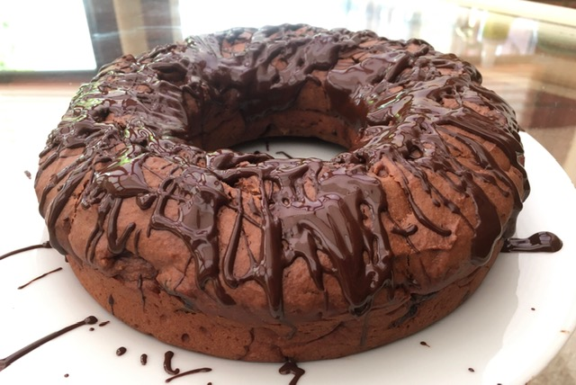

Chocolate Bunt Cake
Ingredients:
-
1 and 1/2 Cups of Flour
-
1/4 Cup of Melted Chocolate
-
1/2 Cup of Yogurt
-
1/4 Cup of Water
-
1/2 Cup of Olive Oil
-
1 tsp of Vinegar
-
1/2 Cup of Sugar
-
1/2 tsp of Baking Soda
-
1/2 tsp of Baking Powder
-
A Pinch of Salt
-
1 tsp of Vanilla Extract
-
Icing: Melted Chocolate

Method:
-
Pre-heat the oven.
-
In a bowl, sieve together flour, coffee powder, baking powder, baking soda, salt and put aside.
-
Take another large bowl, add oil, sugar, yogurt, water, vanilla extract and whisk for 2 minutes to
form a smooth batter.
-
Now add the melted chocolate, vinegar, and whisk for another minute or till chocolate is evenly
mixed in the batter.
-
Using a spatula, fold 1/4 cup dry ingredients to the whisked batter.
-
Follow the above step to mix the rest of the dry ingredients into the batter. (Please fold the dry
ingredients slowly to incorporate air. This will result in lighter and fluffy cake).
-
Pour the batter into the baking pan and bake for 25 minutes.
-
After 25 minutes, poke a toothpick into the center of the cake and remove it instantly. If the
toothpick comes out clean, it means the cake is cooked completely.
-
Remove the cake from the oven and keep on a cooling rack for 10-15 minutes.
-
Melt some more chocolate and drizzle it over the cake to decorate.